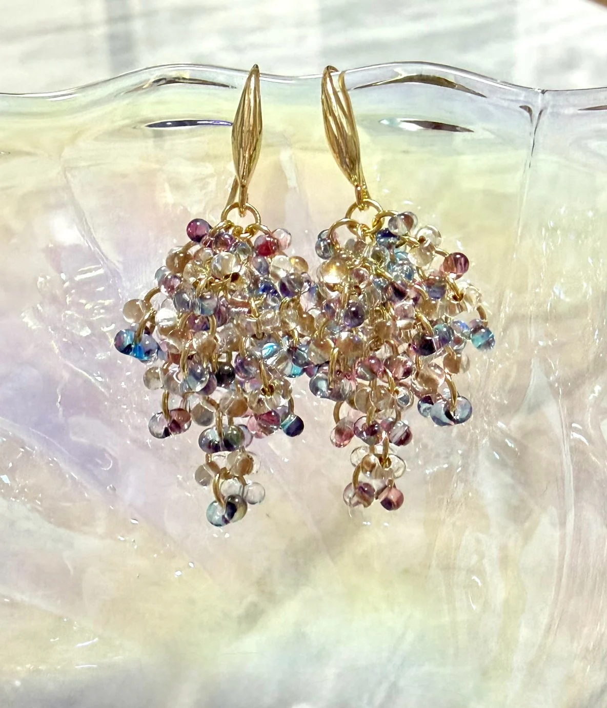
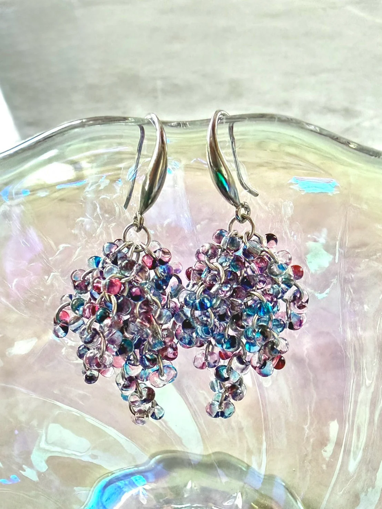
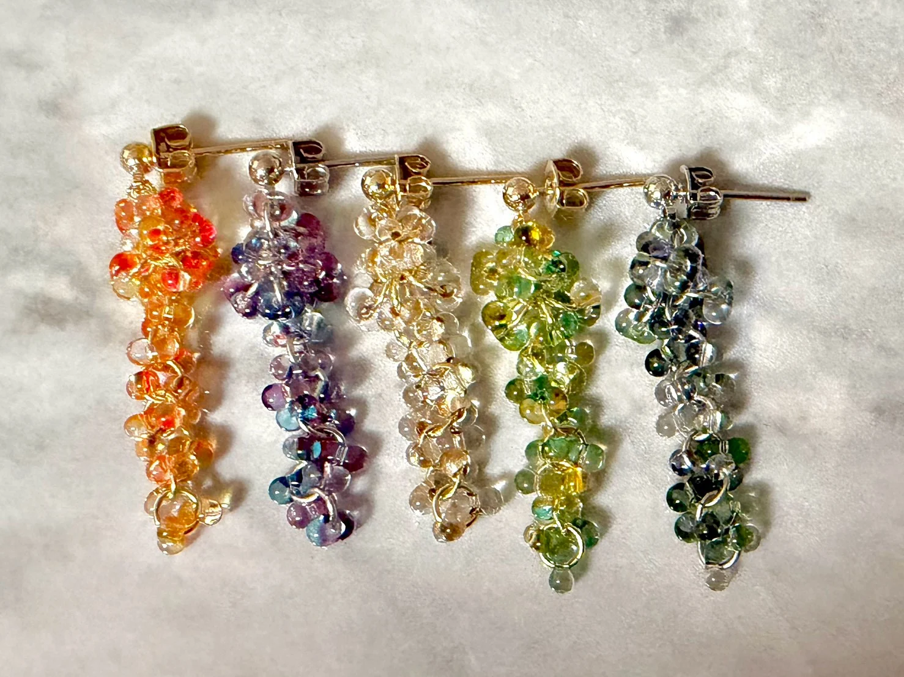
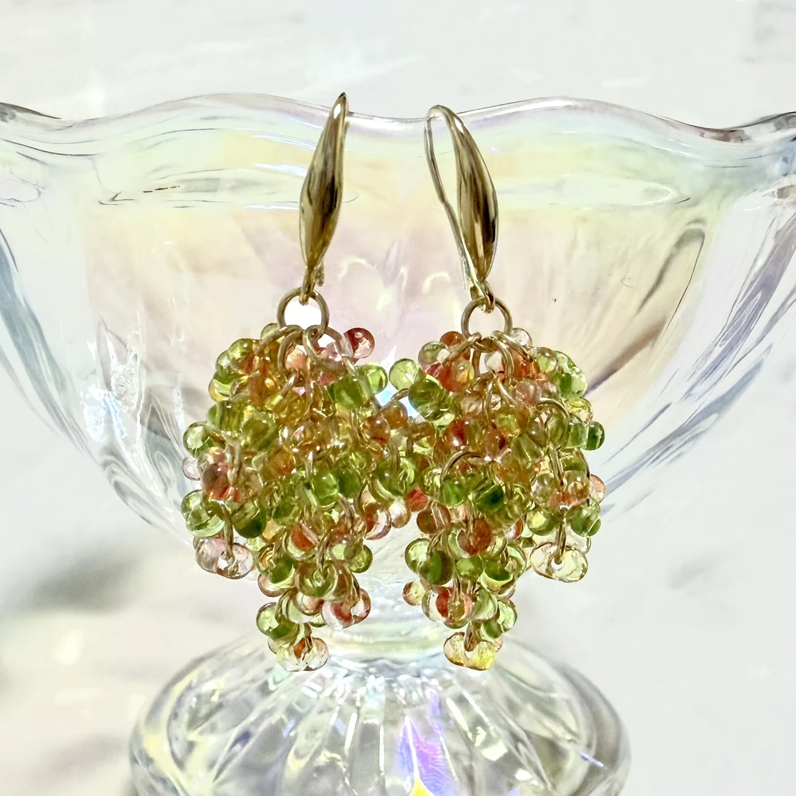
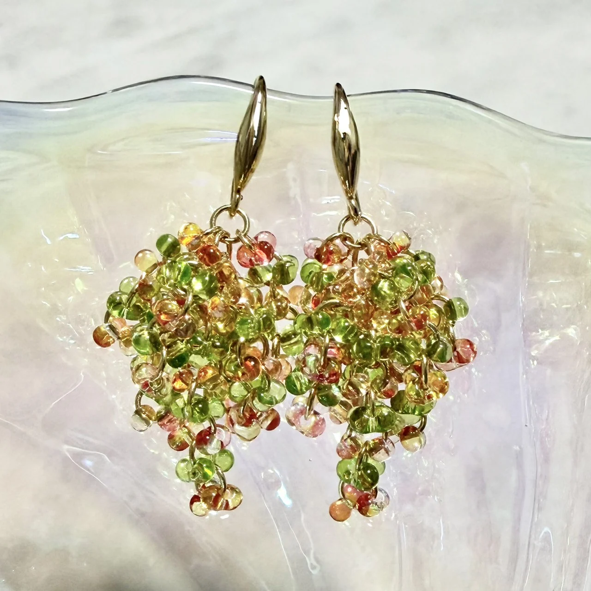
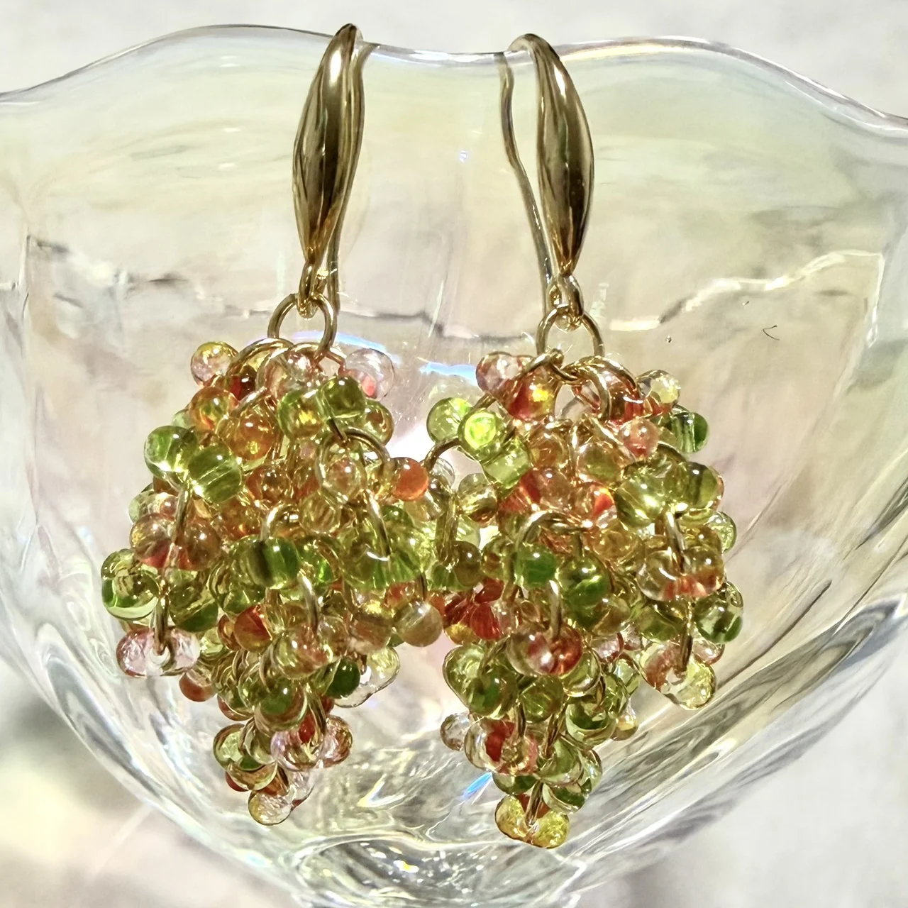

発送
発送目安は1〜2日。状況によっては当日発送します。
HANDMADE / COLOR / LIGHT
色と光を楽しむ、ハンドメイドアクセサリー。
気分に合うひと色を、日常に。



透明感のあるビーズと、日常に取り入れやすい色合わせ。
今日はどの色にする？
ITEMS
現在はピアスを中心に制作しています。
価格と販売リンクは仮表示です。
ABOUT LUX CANIS
Lux Canis（ルクス・カニス）は、色と光の組み合わせを楽しむハンドメイドアクセサリーブランドです。
日常の中で気軽に使えて、身につけたときに少し嬉しくなるものを目指して制作しています。



SHOP GUIDE
現在はメルカリでの販売を予定しています。
発送目安は1〜2日。状況によっては当日発送します。
2点50円引き / 3点100円引き / 4点200円引き。4点以上は1点につき50円引きです。
すべて手作業のため、制作状況に応じて個数を制限する場合があります。
ONLINE SHOP
販売中の商品はメルカリから購入いただける予定です。
※ メルカリの実URLは確認後に設定します。NEWS & RESTOCK
新作・再販・新色のお知らせを、マイページで受け取る内容を選べます。
通知設定を確認する